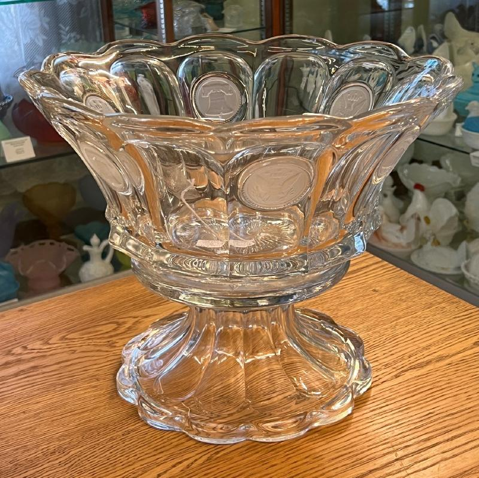

The Historical Glass Museum Foundation was founded in 1976 by Dixie Huckabee and a group of glass collectors. In 1977, the Foundation purchased a 1903 Victorian-style home at 1157 North Orange Street in Redlands.
After nine years of work and fundraising, the Museum opened to the public in 1985. Today it preserves American glass from historic factories as well as work from glass artists still creating today.
Featured Collections
Six rooms of glass include Depression, Elegant, Mid-Century Modern, Carnival, EAPG, and Brilliant Cut selections.

Announcements
The Gift Shop offers selected items that duplicate the permanent collection or were donated for sale to support the Museum.
Group tours may be available. Please contact us with your information so a volunteer can follow up.